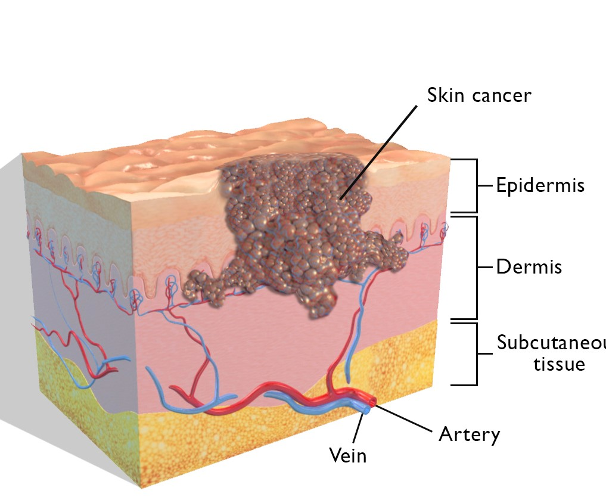

Skin Cancer are cancers that arise from the skin. They are due to the development of abnormal cells that have the ability to invade or spread to other parts of the body.There are three main types of skin cancers: basal-cell skin cancer (BCC), squamous-cell skin cancer (SCC) and melanoma. The first two, along with a number of less common skin cancers, are known as nonmelanoma skin cancer (NMSC).Basal-cell cancer grows slowly and can damage the tissue around it but is unlikely to spread to distant areas or result in death.It often appears as a painless raised area of skin, that may be shiny with small blood vessel running over it or may present as a raised area with an ulcer.
Causes
Sun damage:- If you have a history of sunburn, or have spent a lot of time in the sun, your odds go up for both melanoma and nonmelanoma skin cancers.
Location:- If you live in a warm climate, or high elevation, you’re exposed to higher amounts of UV radiation from the sun, which can make your odds of melanoma go up
Age:-As the years go by, you experience more and more damaging UV rays. Most nonmelanomas seem to show up in adults 50 and older.

Survival Rate
NONMELANOMA SKIN CANCER
The diagnosis and treatment of nonmelanoma skin cancers in the U.S. increased by 77 percent between 1994 and 2014
Organ transplant patients are approximately 100 times more likely than the general public to develop squamous cell carcinoma
MELANOMA SKIN CANCER
One person dies of melanoma every hour.
In the past decade (2008 – 2018) the number of new melanoma cases diagnosed annually has increased by 53 percent
An estimated 9,320 people will die of melanoma in the U.S. in 2018: of those, 5,990 will be men and 3,330 will be women
Survival By Stages
Signs and Symptoms
Skin cancer can also develop on less exposed areas of your body, such as these locations:-
Scalp
Ear
Bottom Of The Feet
Preventing Skin Cancer
Use a sunscreen of at least 30 SPF every day. Apply it 15 to 30 minutes before going outside.
If you’re sweating a lot or swimming, reapply your sunscreen every two hours.
Have your doctor do an annual examination of your skin.